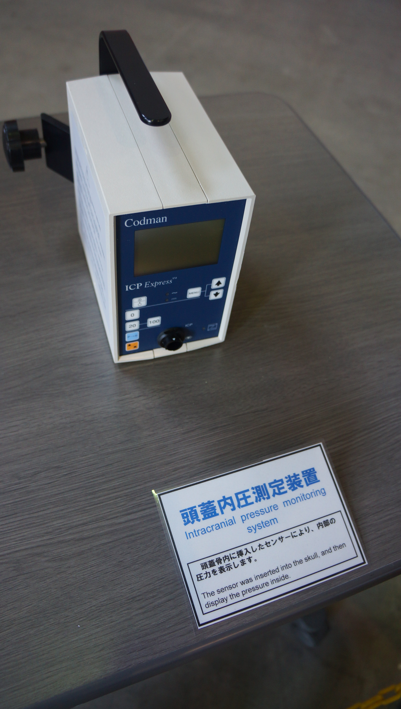
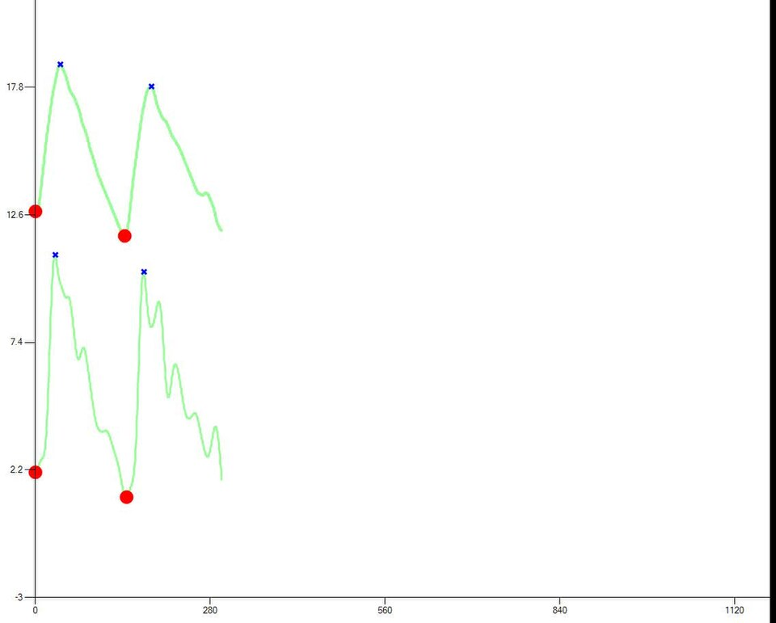
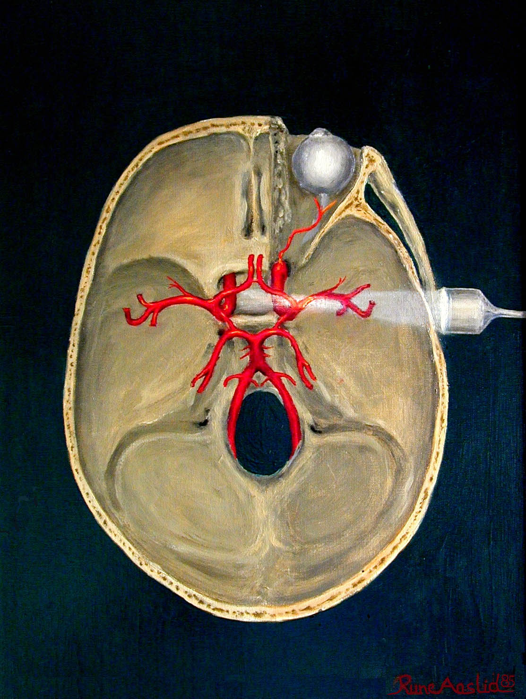
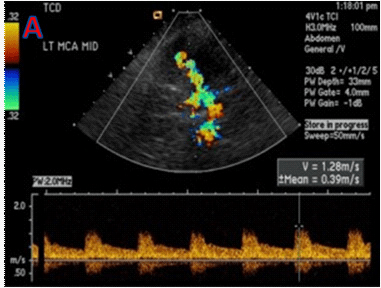

No cérebro vulnerável, PaCO2 move calibre vascular; pressão de via aérea move retorno venoso e PIC.




TCE grave, pulmão pouco lesado, PIC oscilante e sedação contínua.
Após hiperventilação, PaCO2 cai para 25 e a PIC melhora rapidamente.
A melhora numérica seduz a manter hipocapnia profunda.
Vasoconstrição cerebral reduz PIC, mas também fluxo e pode ampliar isquemia.
Usar normocapnia como base; hiperventilação é ponte breve em herniação iminente, com monitorização.
A construção começa pelo mecanismo. Responda sem decorar um protocolo.
Observe a relação entre a variável azul, a carga terracota e o resultado verde ao longo do ciclo.